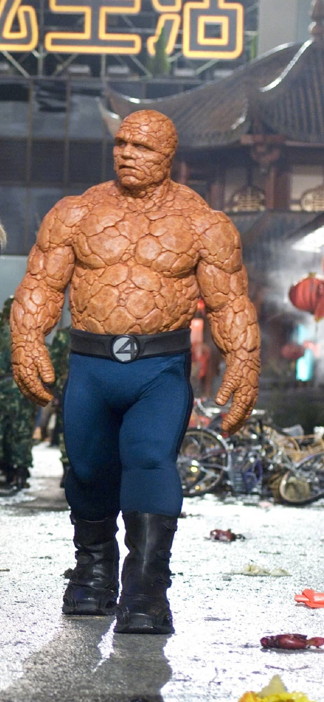

Saffron Impala
Features
The Saffron Impala was a scientist, who got exposed to some chemicals while conducting his research. The chemicals had a great impact on him. The notable features of Saffron Impala are listed below.
-
When he gets angry, he turns into Saffron color.
-
When he is Saffron, his bones and muscles grow in size, tearing the clothes he had put on.
-
The Saffron Impala can jump very high.
-
The Saffron Impala is very strong.
-
The Saffron Impala is immortal.

Click here to navigate to the index.